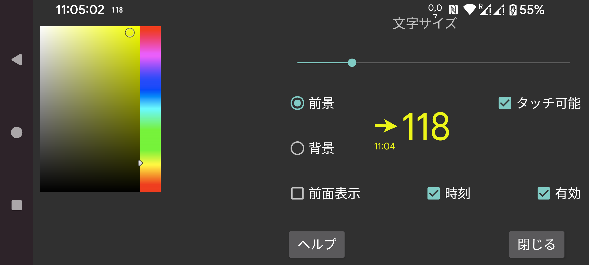

ar be de es fr hi it ja nl pl ru tr uk uz zh en
ここでフローティング血糖のフォントサイズと前景色・背景色を設定できます。
タッチ可能: 設定するとフローティング血糖を指で動かせ、長押し(動かさずに)で小さくできます。タッチ可能を解除すると、タッチ入力はフローティング血糖の下のウィンドウに入るので、フローティング血糖の下のアプリを使用できます。フローティング血糖を ダブルタップ しても、タッチ不可にできます。
透明: 背景を非表示。
上に表示: フローティング血糖を Juggluco の上にも表示します。
時刻: 血糖値のタイムスタンプ。
有効: オンにします。
フローティング血糖は左中メニュー → フロートでオン/オフを切り替えられます。
フローティング血糖の 矢印側 をタップすると Juggluco に切り替わります。血糖値側をダブルタップするとフローティング血糖はタッチ不可になります。血糖値を 長押し すると小さな血糖値表示のみになり、その下と操作できます。小さい表示をタップすると再び拡大します。血糖値側に触れたまま動かすと、フローティング血糖が 移動 します。
他のアプリの上に表示するには Juggluco に特別な権限が必要です。WearOS や Android Automotive では、この権限を付与するために adb を使う必要があります:
adb shell pm grant tk.glucodata android.permission.SYSTEM_ALERT_WINDOW
一部のウォッチ(例えば TicWatch Pro)では、Android/WearOS 設定 → アプリと通知 → アプリ情報 → Juggluco → 詳細 → 他のアプリの上に表示でも許可できます。